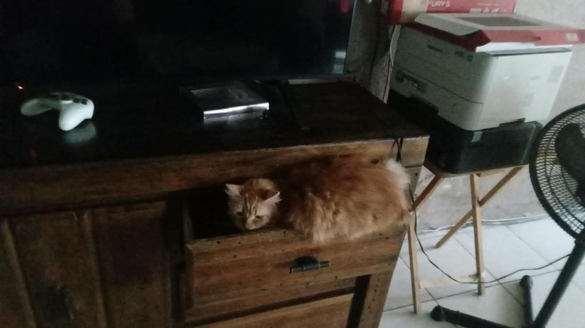
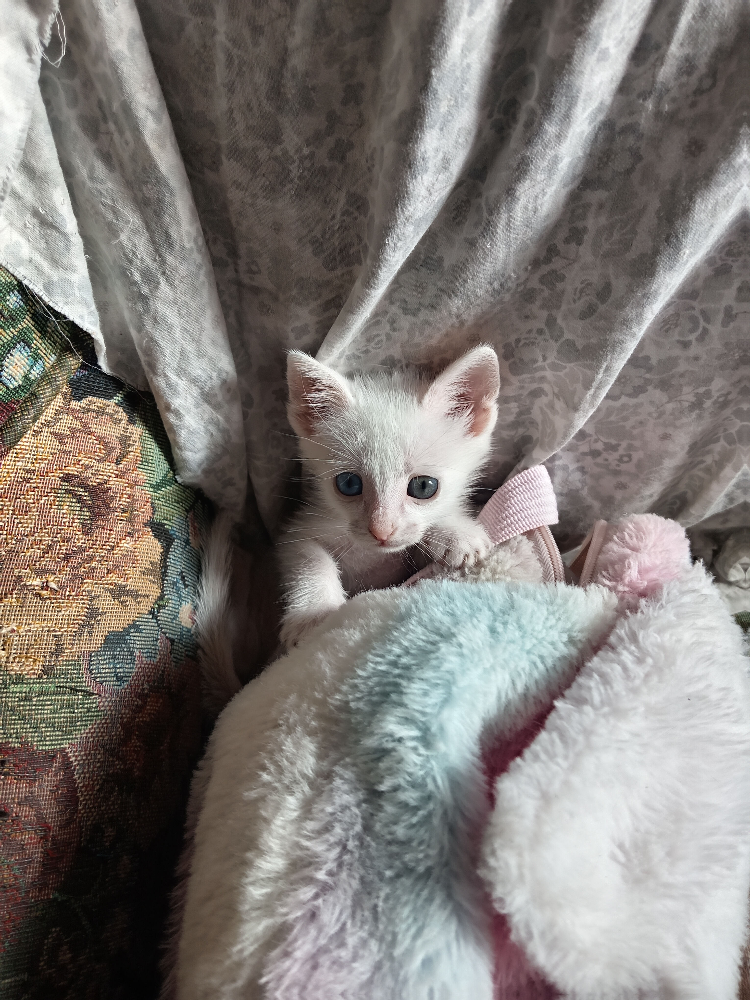

Simba
Edad: 2 años
Sexo: Macho (Esterilizado)
Gatito de pelaje esponjoso, de carácter tranquilo y muy curioso. Le encanta buscar rincones acogedores para descansar.
Quiero AdoptarEstos pequeños están listos para formar parte de una familia amorosa y responsable. Explora sus fichas y agenda una visita.

Edad: 2 años
Sexo: Macho (Esterilizado)
Gatito de pelaje esponjoso, de carácter tranquilo y muy curioso. Le encanta buscar rincones acogedores para descansar.
Quiero Adoptar
Edad: 3 meses
Sexo: Hembra
Pequeña gatita blanca juguetona y muy tierna. Se adapta perfectamente a familias con niños u otras mascotas.
Quiero Adoptar
Edad: 1 año y 2 meses
Sexo: Macho y Hembra
Rescatados juntos desde pequeños. Buscamos un hogar amoroso que desee darles la oportunidad de ser adoptados en pareja.
Quiero Adoptar